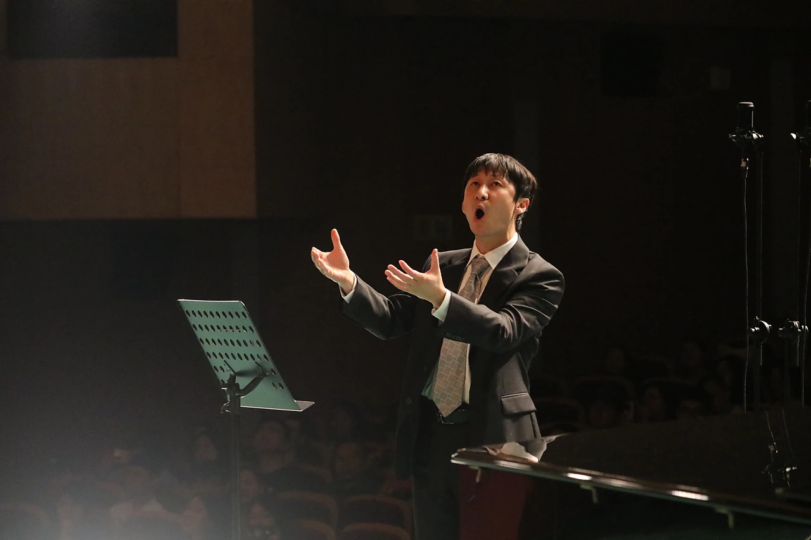

王程
中国人民大学女子合唱团常任指挥
- 专业背景
- 北京航空航天大学00级校友，自2003年起从事合唱教学与研究工作至今。
- 指导经历
- 现为 Harmonia 和谐之声合唱团副团长，曾担任北京多所高校合唱团指挥、艺术指导。
在同一拍里，
听见彼此
指挥连接作品、声音与每一位团员。排练中的一次呼吸、一个手势与一段耐心打磨，最终共同成为舞台上的合声。

中国人民大学女子合唱团常任指挥
指挥连接作品、声音与每一位团员。排练中的一次呼吸、一个手势与一段耐心打磨，最终共同成为舞台上的合声。